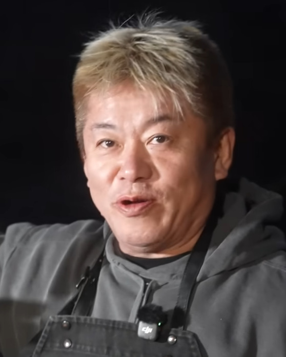
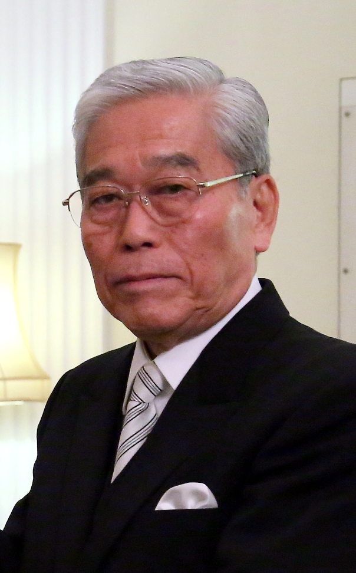
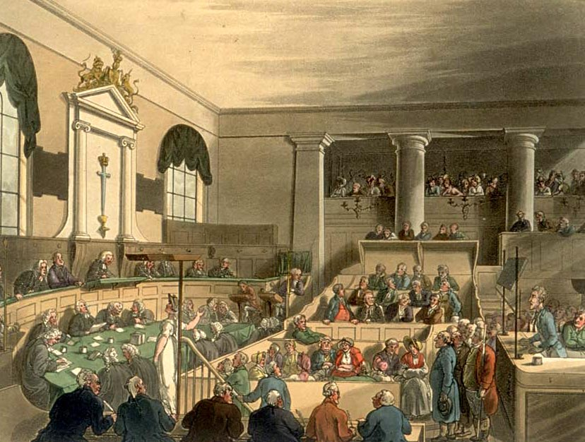
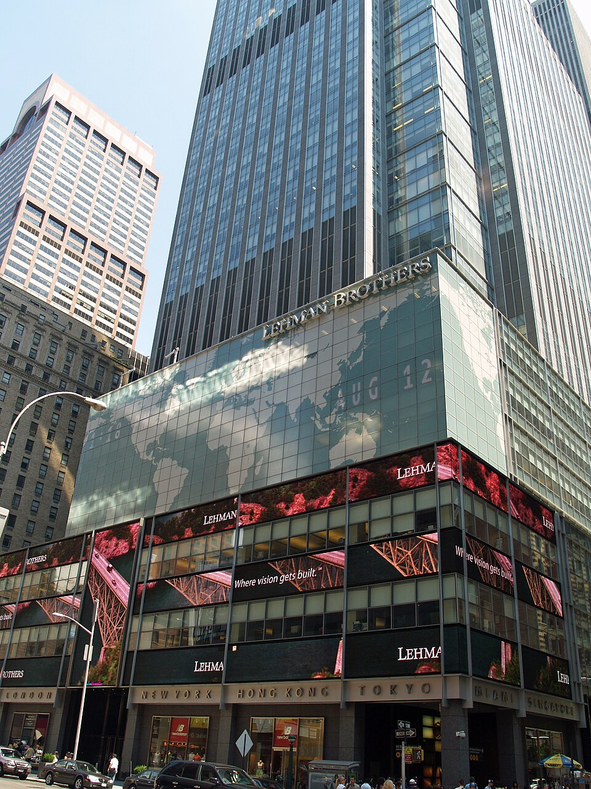
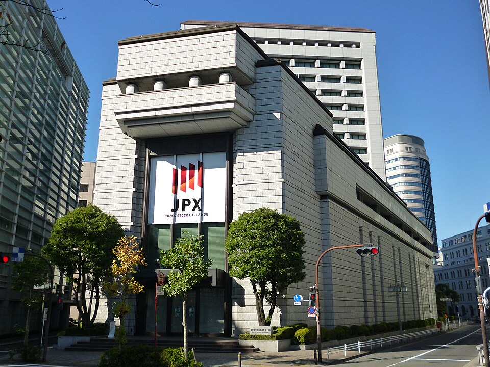
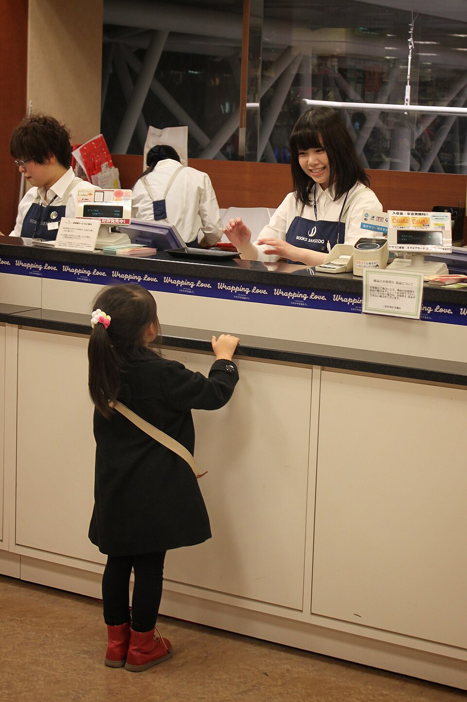
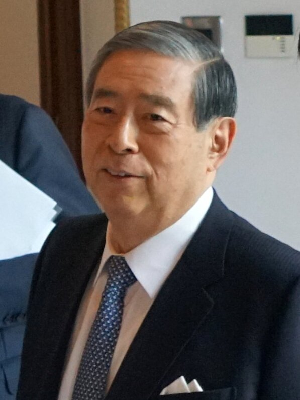

.jpg){kind=link}



堀江貴文
ほりえ・たかふみ
ライブドア代表取締役
役割：買収を主導しネットと放送の融合を主張
その後：2005年の買収攻防後の別事件は本件の範囲外43
2005年1月〜2005年9月
フジテレビがニッポン放送の子会社化を目指してTOBを開始した後、ライブドアは2005年2月8日、子会社を通じて東証のToSTNeT-1でニッポン放送株を取得し。グループ保有比率を35.0％にした。1
ニッポン放送はフジテレビを割当先として発行済株式数の約1.44倍に相当する新株予約権を発行しようとしたが、東京地裁と東京高裁は支配権維持を主要目的とする不公正発行として差止めを認めた。2
2005年4月18日、フジテレビとライブドアは、ライブドア・パートナーズの買収、ライブドアへの第三者割当増資、業務提携を柱に基本合意し。買収攻防は資本提携へ移行した。3

ニッポン放送はフジテレビ株を大量に保有していたため、形式上はフジテレビがニッポン放送の子会社になる一方、実質的にはニッポン放送がフジテレビの大株主となる関係にあった。ニッポン放送を支配すればフジテレビに間接的な影響を及ぼせる構造であり、2003年以降に村上世彰が関係する投資ファンドが株式を買い集めたことで、資本関係の整理が急がれた。フジテレビは2005年1月17日にニッポン放送株のTOBを発表し、過半数取得による子会社化を目指した。14
債権者は、債務者の発行済株式総数の約5.4パーセント（175万6760株）を保有していたが、本件公開買付け期間中である平成17年2月8日に、東京証券取引所のToSTNeT-1を利用した取引によって、株式会社ライブドア・パートナーズを通じて、債務者の発行済株式総数の約29.6パーセントに相当する株式972万0270株を買い付け（以下「本件ToSTNeT取引」という。）、その結果、債務者の発行済株式総数の約35.0パーセントの割合の普通株式を保有する株主となった。 そして、債権者は、同日付けの「意図表明書」により、何人かの債務者の株主に対し、債務者の普通株式全部の取得を希望する旨を伝えた。また、債権者の代表取締役A（以下「債権者代表者」という。）は、同日、記者会見を行い、債務者株式の取得の意図について、放送局が保有するWebサイトをポータル化し、シナジー効果を得ることを目的とするものであり、また、フジサンケイグループとの業務提携も見据えたものであることを明らかにした。
意味：大量取得の方法や支配権取得の意思とネットと放送の提携構想が、裁判所の認定事実として一続きに記録されている。[同URL]
ライブドアは2005年2月8日、子会社ライブドア・パートナーズを通じてニッポン放送株9,720,270株を東証のToSTNeT-1で取得した。これは発行済株式の約29.6％であり、ライブドア自身の保有分を加えるとグループ保有比率は35.0％となった。ライブドア側は、放送局が保有するWebサイトをポータル化し、インターネット事業との相乗効果を得る構想を示した。取得方法は取引所市場内の立会外取引と扱われ、当時のTOB規制の対象外だったが、企業支配権の取得をめぐって金融当局や国会で制度の妥当性が問われた。256
ニッポン放送取締役会は2月23日、フジテレビを割当先として4,720万株の新株予約権を発行することを決議した。すべて行使されればライブドアの持株比率を大幅に希釈できる内容だった。ニッポン放送側は、放送事業の公共性、番組契約、取引先や従業員への影響を挙げ。フジテレビによる子会社化が企業価値の維持に必要だと主張した。ライブドアは2月24日、発行がフジテレビ側の支配権維持を目的とする不公正発行だと主張して、東京地裁に差止めを申し立てた。37
東京地裁は3月11日、新株予約権発行の差止めを決定した。裁判所は、ライブドアの事業計画について収益や株価の向上をそのまま合理的に予測できるとはしなかった一方、インターネット事業との相乗効果が期待できないともいえず。事業計画に合理性が認められないとはいえないと判断した。そのうえで、発行は現経営陣と同様にフジサンケイグループに属する経営陣による支配権の維持を主要な目的とすると認定し、企業価値が著しく毀損されることが明らかとはいえない以上。発行を正当化する特段の事情はないとした。58
商法280条ノ39第4項、280条ノ10所定の「著シク不公正ナル方法」による新株予約権発行とは、不当な目的を達する手段として新株予約権発行が利用される場合をいうと解されるところ、株式会社においてその支配権につき争いがあり、従来の株主の持株比率に重大な影響を及ぼすような数の新株予約権が発行され、それが第三者に割り当てられる場合に、その新株予約権発行が支配権を争う特定の株主の持株比率を低下させ、現経営陣の支配権を維持することを主要な目的としてされたものであるときは、会社ひいては株主全体の利益の保護という観点からその新株予約権発行を正当化する特段の事情がない限り、不当な目的を達成する手段として新株予約権発行が利用される場合にあたるというべきである。
意味：買収防衛策を経営陣の保身として扱う司法判断の基準が明示されている。[同URL]
ニッポン放送は異議を申し立てたが、東京地裁は3月16日に却下し、東京高裁も3月23日に保全抗告を棄却した。ニッポン放送は新株予約権発行を中止した。フジテレビ側では、北尾吉孝が率いるSBIがニッポン放送保有のフジテレビ株を借り受け、フジ側の資本政策を支援する立場になった。北尾は、SBIの行動はソフトバンク本体の決定ではなく、SBIがフジテレビの経営に関与する意図もないと説明した。ライブドアは3月25日、議決権ベースでニッポン放送株50.21％を取得したと発表した。91011
裁判上の防衛策が認められず、フジテレビがニッポン放送株とライブドアへの出資を組み合わせた交渉を進めたことで、買収攻防は単独支配ではなく資本提携へ向かった。4月18日、フジテレビはライブドア・パートナーズを670億円で買収し、同社保有分を含めニッポン放送株の68.87％を保有する計画を示した。さらにフジテレビはライブドアの第三者割当増資を440億円で引き受け、約14.61％を保有する計画を示した。ライブドアはニッポン放送の直接支配権を手放す代わりに、子会社株式の売却代金とフジテレビによる資本参加を得る合意に至った。1213
本件では、形式上は市場内取引であっても、企業支配権の取得を目的とする大量取得が一般株主にどのような売却機会を与えるかが争点になった。金融庁は、立会外取引が相対取引と類似する形態となればTOB制度の形骸化を招くおそれがあるとして、保有割合が3分の1を超える一定の立会外取引をTOB規制の対象に加える方針を示した。2005年6月には証券取引法改正が行われた。フジテレビはその後、ニッポン放送の完全子会社化を2005年9月に予定し、買収攻防は法廷闘争から資本関係の再編へ移った。141512
立会外取引はその使い方によって相対取引と類似した形態となり、これを放置すれば公開買付制度、ＴＯＢ制度の形骸化を招く惧れがあると考えらえることから、現在立会外取引を公開買付規制、ＴＯＢ規制の適用対象に加えることができるようにすることを視野に入れ、検討を進めているところでございます。本件につきましては、今後与党の方々とも御相談をしつつ検討を進めていきたいと思っております。 立会外取引を全て例外なく公開買付制度の対象とするという改正を考えているわけではございません。その内、相対取引と類似した取引というもので、保有割合の３分の１を超えて取得をしようとするケース、こういったケースに限定をして公開買付規制の対象としようというふうに考えております。
意味：制度の盲点を認めつつ、立会外取引全体ではなく、相対取引類似かつ3分の1超の取得を対象にする方針を示した。[同URL]
4月18日の基本合意は、買収者と対象会社が一方の勝敗だけで終わる取引ではなかった。フジテレビはライブドア・パートナーズの全株式を譲り受けることで、同社が保有するニッポン放送株32.4％を含む支配権を確保した。一方で、ライブドアが実施する第三者割当増資をフジテレビが引き受け、両社の資本関係を新たに組み立てた。フジテレビの開示資料は、買収総額を67,000百万円、引受総額を44,000百万円と記載し。ニッポン放送株68.87％を保有することを前提に完全子会社化を進める計画を示している。12
この過程では、堀江貴文が買収を主導し。日枝久と村上光一がフジ側の買収・防衛の意思決定を担った。ニッポン放送取締役会はフジテレビ向け新株予約権を決議したが、ライブドアの申立てを受けた東京地裁は発行を差し止め、東京高裁も保全抗告を棄却した。北尾吉孝はSBIによるフジテレビ株の保有を説明し、村上世彰が関係するファンドは買収前の株式保有と売却を通じて市場の当事者となった。金融担当大臣や金融庁長官は、一般株主に平等な売却機会を与えるTOB制度との関係を説明し、国会でも取引の方法と規制の不足が議論された。81614
買収攻防の決着は、ライブドアがニッポン放送株を保有し続ける形でも、フジテレビが新株予約権を行使する形でもなかった。ライブドア・パートナーズの売却によって、フジテレビはニッポン放送株の保有比率を確保し、ライブドアは売却代金と資本参加を受ける立場になった。フジテレビが開示した基本契約は、ニッポン放送の子会社化とライブドアとの業務提携関係の構築を同時に達成することを目的として記載している。ここでは、株式の取得、買収資金の調達、裁判所による防衛策の判断。和解後の資本参加が連続する一つの経緯として確認できる。1213
フジテレビの開示資料には、買収総額、割当株数、引受総額。ニッポン放送株の保有比率が記載されている。これらは、買収の意図をめぐる会見や裁判上の主張とは異なり、和解取引の条件として公表された数値である。以上。12







| ニッポン放送旧本社 | 東京都千代田区有楽町1-9-3 | 買収対象会社の本社 | 36 |
| フジテレビ本社 | 東京都港区台場2-4-8 | TOB・防衛策を主導した会社 | 37 |
| ライブドア旧本社周辺 | 東京都港区六本木6-10-1 | ライブドア本社所在地として報道された地域 | 38 |
| 東京地方裁判所 | 東京都千代田区霞が関1-1-4 | 新株予約権差止め仮処分の審理 | 39 |
| 東京高等裁判所 | 東京都千代田区霞が関1-1-1 | 保全抗告の審理 | 39 |
| 東京証券取引所 | 東京都中央区日本橋兜町2-1 | ToSTNeT-1による株式取得の市場 | 40 |
| SBI本社周辺 | 東京都港区六本木1-6-1 | 北尾吉孝・SBIの関係地点 | 41 |
| フジテレビ旧本社 | 東京都新宿区河田町3-1 | 旧フジテレビ本社所在地 | 42 |
買収攻防では、フジテレビのTOBとライブドアのToSTNeT-1取得が並行し、ライブドアはMSCBで資金を調達した。ニッポン放送の新株予約権発行は差し止められ、4月18日の合意ではフジテレビがライブドア・パートナーズを買収し、ライブドアに440億円を出資することで。ニッポン放送の支配権とライブドアへの資本参加を同時に処理した。1238

ほりえ・たかふみ
ライブドア代表取締役
役割：買収を主導しネットと放送の融合を主張
その後：2005年の買収攻防後の別事件は本件の範囲外43
ひえだ・ひさし
フジテレビ会長
役割：フジ側の買収・防衛戦略の中心人物と報じられた
その後：本件の直接的な刑事処分は確認できない12
むらかみ・こういち
フジテレビ社長
役割：フジテレビの取締役会と開示文書上の代表者
その後：本件の直接的な刑事処分は確認できない33

むらかみ・よしあき
村上ファンド関係者
役割：ニッポン放送株を大量保有し株式売却に関係
その後：後年のインサイダー取引事件は別事件38

きたお・よしたか
SBI代表取締役CEO
役割：フジテレビ株の貸借・保有を通じてフジ側を支援
その後：和解後の株式返却方針を説明16
MSCB引受主体
役割：ライブドアの800億円MSCBの引受主体
その後：個人名は本調査で未確認38
かのこぎ・やすし
東京地裁裁判長
役割：新株予約権差止め仮処分を担当したと報じられた
その後：本件判決以後の情報は本調査で未確認8
ごみ・ひろふみ
金融庁長官
役割：TOB規制と立会外取引規制を会見で説明
その後：制度見直しを説明30
いとう・たつや
金融担当大臣
役割：立会外取引規制の法制化検討を説明
その後：証券取引法改正の議論に関係14
ふくい・としひこ
日本銀行総裁
役割：時間外取引とTOB制度について会見で質問を受けた
その後：本件の直接的な処分は確認できない24
かんだ・ひでき
金融審議会第一部会長
役割：TOB制度の見直し議論に関係
その後：本件の直接的な処分は確認できない27
そん・まさよし
ソフトバンク代表
役割：北尾との関係が報道で言及された
その後：フジテレビ株取得への直接関与は未確認11
取引所
役割：ToSTNeT-1による株式取得の市場
その後：制度見直しの対象となった40
買収主体
役割：ニッポン放送株を取得し支配権を目指した
その後：フジテレビとの資本・業務提携に合意13
TOB・資本提携主体
役割：ニッポン放送子会社化と買収防衛を進めた
その後：ニッポン放送完全子会社化を予定12
買収対象会社
役割：フジ向け新株予約権発行を決議した
その後：新株予約権発行を中止7
相関図は、買収を進めたライブドア側、TOBと防衛策を進めたフジ・ニッポン放送側、株式と資金を媒介したファンド・金融機関。制度を判断した行政・裁判所を分けて示す。闇の人脈に関する項目は、確認できた株式・資金関係と、直接関与が確認できない関係を区別して示す。
対立・確執。堀江はニッポン放送を通じてフジサンケイグループとの提携・支配を目指し、日枝が率いるフジ側はTOB、新株発行。SBIの支援で対抗した。最終的には両社が資本・業務提携で和解した。ITmedia13
資金の出し手と受け手。村上ファンドが保有していたニッポン放送株の一部が、ライブドアによる2月8日の大量取得に組み込まれたとされる。国立国会図書館38
対立・確執。北尾はフジ側の支援者として登場し、堀江の敵対的買収を批判的に評価した。和解後はSBIの株式返却方針を説明した。SBI16
盟友。北尾はフジテレビ株を保有・支援し、フジ側の資本政策を補完した。野村資本市場研究所10
上司と部下。日枝は会長、村上は社長としてフジテレビの買収戦略と開示を担った。フジ開示33
上司と部下。フジテレビ側の代表取締役として、ニッポン放送完全子会社化の手続きを公表した。フジ開示12
対立・確執。村上ファンドの大株主化は、ニッポン放送とフジテレビが資本関係整理を急ぐ契機となった。野村資本市場研究所4
対立・確執。ニッポン放送はライブドアの支配が放送の公共性・企業価値を損なうと主張し、フジ向け新株予約権を決議した。東京地裁決定7
裏切り・告発。ライブドアは新株予約権発行を不公正発行として裁判所に差止めを求めた。Internet Watch3
対立・確執。東京地裁は、発行が現経営陣の支配権維持目的であると認定し、差止めを命じた。ITmedia8
対立・確執。東京高裁は保全抗告を棄却し、発行中止につながった。東京税務研究センター9
上司と部下。北尾はソフトバンク・インベストメント出身だが、フジテレビ株取得について「ソフトバンク本体には関係ない」と説明した。ITmedia11
資金の出し手と受け手。リーマンはライブドアの買収資金調達のため800億円MSCBの引受先となった。国立国会図書館38
資金の出し手と受け手。フジはライブドア・パートナーズを670億円で買収し、ライブドアには440億円を出資した。ITmedia13
対立・確執。村上ファンドによる後年のインサイダー取引捜査・起訴は、買収情報をめぐる別事件として報道された。赤旗44
裏切り・告発。2006年のライブドア粉飾事件で捜査対象となったが、これは2005年のニッポン放送買収攻防とは別事件である。国立国会図書館38
なるほど、債務者の主張するところを考慮すると、債務者が債権者の子会社となり業務提携を行った場合に、債権者の試算するとおり債務者の収益や株価が向上することが合理的に予測できるとまではいうことはできないが、他方、前記のとおり、インターネットの利用者が増加し、インターネット広告費も上昇していること、電子商取引やインターネット課金・決済市場も急激な伸びを示していること（甲29）からすると、債務者の事業と債権者のインターネット事業との間の相乗効果が期待できないということはできないし、債権者の事業計画に合理性が認められないとまではいうことはない。 債権者は、債務者の株式を取得する前である平成16年11月以降、関西テレビとの業務提携を図り交渉を継続してきた経緯があること（甲280の1から4まで、甲75）、債権者は、債務者の経営に参画し、業務提携を行うことを前提に前記のとおりの事業計画（甲29の1）を作成していること、債権者の主張する債務者の株価試算は、債権者の事業計画に基づき第三者機関であるPwCアドバイザリー株式会社の行った分析にかかるものであること（甲290の2）からすると、債権者がメディアとの事業提携を目指していることを否定することはできない。
意味：裁判所は計画の数値をそのまま認めたわけではないが、ライブドアの提携構想自体を虚偽・濫用とは断じなかった。[同URL]
調査メモで確認できる外部関係は、村上ファンドの株式売却、SBIのフジ側支援、リーマン・ブラザーズのMSCB引受け。ToSTNeT-1を通じた取引である。暴力団、総会屋、非合法ブローカー、海外口座への資金流出、政治家の株式取引への直接介入は。公的資料で確認できない。
村上世彰、MACアセットマネジメント 報道
村上ファンド、ライブドア・パートナーズ 報道
北尾吉孝、SBI 指摘
リーマン・ブラザーズ 認定
東京証券取引所、証券会社 認定
政治家・政党 疑惑
暴力団・総会屋 確認できない
海外法人・海外口座 確認できない
仕手筋 確認できない
ただ立会外取引というやり方は取引所の市場外の相対取引と非常に類似した形態をとることも可能だということでございますので、この点に着目をして、会社支配権の獲得を目的とした買付けであれば、その場合には特に株主に公平に株券を売却する機会を与えるという公開買付制度の趣旨にもとることになってしまいます。つまり市場外取引と同等のことを立会外取引という市場の中の取引で行って良いということになるわけです。こうしたことを放置すれば公開買付制度というものを設けた趣旨が形骸化していくという惧れがあることから、こういった相対取引と類似した取引によって株券等所有割合の３分の１を超えて株券を取得する場合は、公開買付規制の対象としようということでございます。
意味：金融庁は、形式上の「市場内取引」でも、支配権取得ならTOB制度の趣旨を損なうと説明した。[同URL]
| ライブドア | 1110億円 | 0億円 | 子会社売却代金670億円と第三者割当増資440億円の合意 | 13 |
| フジテレビ | 68.87％ | 0％ | ニッポン放送株の保有計画 | 12 |
| ニッポン放送株主 | 35.0％ | 0％ | 買収合戦で示された保有比率・売却機会 | 4 |
| フジテレビ株主 | 14.67％ | 0％ | SBIによるフジテレビ株保有 | 10 |
| リーマン・ブラザーズ | 800億円 | 0億円 | MSCB引受け額。手数料・転換権益の具体額は未確認 | 38 |
| 金融庁・取引所 | 0件 | 0件 | 制度の盲点を受けTOB規制改正を実施 | 6 |
| 本件調査 | 2005年以降 | 刑事有罪判決は確認できない |
2005年ニッポン放送買収攻防に関する刑事責任。確認できない46
| 東京地裁 | 2005-03-11 | 発行差止め。5億円の担保を条件 |
| 東京地裁 | 2005-03-16 | ニッポン放送の異議を却下 |
| 東京高裁 | 2005-03-23 | 保全抗告を棄却 |
| 国会・金融庁 | 2005年6月 | 一定の立会外取引をTOB規制対象とする証券取引法改正 |
TOB規制の適用範囲。制度改正6
| 金融庁資料 | 2005年以降 | 本件取引への行政処分の確定は確認できない |
TOB規制違反。確認できない6
債権者は、債務者の発行済株式総数の約5.4パーセント（175万6760株）を保有していたが、本件公開買付け期間中である平成17年2月8日に、東京証券取引所のToSTNeT-1を利用した取引によって、株式会社ライブドア・パートナーズを通じて、債務者の発行済株式総数の約29.6パーセントに相当する株式972万0270株を買い付け（以下「本件ToSTNeT取引」という。）、その結果、債務者の発行済株式総数の約35.0パーセントの割合の普通株式を保有する株主となった。 そして、債権者は、同日付けの「意図表明書」により、何人かの債務者の株主に対し、債務者の普通株式全部の取得を希望する旨を伝えた。また、債権者の代表取締役A（以下「債権者代表者」という。）は、同日、記者会見を行い、債務者株式の取得の意図について、放送局が保有するWebサイトをポータル化し、シナジー効果を得ることを目的とするものであり、また、フジサンケイグループとの業務提携も見据えたものであることを明らかにした。
意味：大量取得の方法や支配権取得の意思とネットと放送の提携構想が、裁判所の認定事実として一続きに記録されている。[同URL]
なるほど、債務者の主張するところを考慮すると、債務者が債権者の子会社となり業務提携を行った場合に、債権者の試算するとおり債務者の収益や株価が向上することが合理的に予測できるとまではいうことはできないが、他方、前記のとおり、インターネットの利用者が増加し、インターネット広告費も上昇していること、電子商取引やインターネット課金・決済市場も急激な伸びを示していること（甲29）からすると、債務者の事業と債権者のインターネット事業との間の相乗効果が期待できないということはできないし、債権者の事業計画に合理性が認められないとまではいうことはない。 債権者は、債務者の株式を取得する前である平成16年11月以降、関西テレビとの業務提携を図り交渉を継続してきた経緯があること（甲280の1から4まで、甲75）、債権者は、債務者の経営に参画し、業務提携を行うことを前提に前記のとおりの事業計画（甲29の1）を作成していること、債権者の主張する債務者の株価試算は、債権者の事業計画に基づき第三者機関であるPwCアドバイザリー株式会社の行った分析にかかるものであること（甲290の2）からすると、債権者がメディアとの事業提携を目指していることを否定することはできない。
意味：裁判所は計画の数値をそのまま認めたわけではないが、ライブドアの提携構想自体を虚偽・濫用とは断じなかった。[同URL]
商法280条ノ39第4項、280条ノ10所定の「著シク不公正ナル方法」による新株予約権発行とは、不当な目的を達する手段として新株予約権発行が利用される場合をいうと解されるところ、株式会社においてその支配権につき争いがあり、従来の株主の持株比率に重大な影響を及ぼすような数の新株予約権が発行され、それが第三者に割り当てられる場合に、その新株予約権発行が支配権を争う特定の株主の持株比率を低下させ、現経営陣の支配権を維持することを主要な目的としてされたものであるときは、会社ひいては株主全体の利益の保護という観点からその新株予約権発行を正当化する特段の事情がない限り、不当な目的を達成する手段として新株予約権発行が利用される場合にあたるというべきである。
意味：買収防衛策を経営陣の保身として扱う司法判断の基準が明示されている。[同URL]
これを本件についてみると、確かに債務者の経営陣は事前にフジテレビによる公開買付けに協力することを決定しており、本件新株予約権の発行について社外取締役4名を含む全員が一致しているものであることに照らしても、自らの保身のために本件新株予約権の発行を決定したものとは認められないから、本件新株予約権の発行は現在の取締役の地位保全を主たる目的とするものとはいえない。しかしながら、前記1(3)イのとおり、債権者は、債権者による大量の債務者株式取得という公開買付けの開始後に発生した事情に影響を受けることなく、債務者が賛同を表明したフジテレビによる債務者の子会社化という目的を達成する手段として、本件新株予約権を付与したというのであるから、本件新株予約権の発行は、現経営陣と同様にフジサンケイグループに属する経営陣による支配権の維持を目的とするものであり、なお現経営陣の支配権を維持することを主たる目的とするものというべきである。
意味：裁判所は個人的保身は認定しなかった一方、フジ系経営陣による支配権維持を主要目的と認定した。[同URL]
企業価値とは、会社ひいては株主全体の利益をいうものと解することができるところ、特定の株主の支配権取得によりかかる利益が毀損される場合には、取締役はこれを防止することを目的として相当な手段をとることが許される場合があるというべきである。他方、現経営陣の支配権の維持を主たる目的とする新株予約権の発行が原則として許されないことからすると、企業価値の毀損防止のための手段として新株予約権の発行を正当化する特段の事情があるというためには、特定の株主の支配権取得により企業価値が著しく毀損されることが明らかであることを要すると解すべきである。 ところで、会社には、株主のほかにも、従業員・取引先・顧客・地域社会などの利害関係者が存在し、これら利害関係者の利益を高めることは、長期的には株主全体の利益にもつうじるということができるから、企業価値の検討にあたっては、これら利害関係者の利益をも考慮する必要があると一応いうことができる。
意味：従業員や取引先への影響は考慮対象だが、それだけで防衛策を正当化するには「明らか」な著しい毀損が必要とされた。[同URL]
この点は見解というよりは私の理解を申し上げる。言葉が適当かどうかわからないが、企業の支配権の取得を目的とした大量の株式の買い付けの場合には、証券取引法上どうなっているかということは私も理解している。もし間違っている場合は教えて欲しいが、一つは市場内取引で買い付けを行なう、もう一つは、公告等によって条件を明示する公開買い付け——いわゆるテイク・オーバー・ビッド（ＴＯＢ）——方式によるか、いずれかの方法が義務づけられていると理解している。その趣旨は、上場株を一定規模以上取得する場合には、不透明な取引や特定の株主だけに有利な取引が行われることを排除して、多数の株主に当該株式を売買する機会を平等に与えるという趣旨だと理解している。
意味：日銀総裁も、問題を「支配権取得」と株主への平等な売却機会の問題として説明した。[同URL]
立会外取引はその使い方によって相対取引と類似した形態となり、これを放置すれば公開買付制度、ＴＯＢ制度の形骸化を招く惧れがあると考えらえることから、現在立会外取引を公開買付規制、ＴＯＢ規制の適用対象に加えることができるようにすることを視野に入れ、検討を進めているところでございます。本件につきましては、今後与党の方々とも御相談をしつつ検討を進めていきたいと思っております。 立会外取引を全て例外なく公開買付制度の対象とするという改正を考えているわけではございません。その内、相対取引と類似した取引というもので、保有割合の３分の１を超えて取得をしようとするケース、こういったケースに限定をして公開買付規制の対象としようというふうに考えております。
意味：制度の盲点を認めつつ、立会外取引全体ではなく、相対取引類似かつ3分の1超の取得を対象にする方針を示した。[同URL]
ただ立会外取引というやり方は取引所の市場外の相対取引と非常に類似した形態をとることも可能だということでございますので、この点に着目をして、会社支配権の獲得を目的とした買付けであれば、その場合には特に株主に公平に株券を売却する機会を与えるという公開買付制度の趣旨にもとることになってしまいます。つまり市場外取引と同等のことを立会外取引という市場の中の取引で行って良いということになるわけです。こうしたことを放置すれば公開買付制度というものを設けた趣旨が形骸化していくという惧れがあることから、こういった相対取引と類似した取引によって株券等所有割合の３分の１を超えて株券を取得する場合は、公開買付規制の対象としようということでございます。
意味：金融庁は、形式上の「市場内取引」でも、支配権取得ならTOB制度の趣旨を損なうと説明した。[同URL]
○与謝野国務大臣 私は、この取引が行われたときに、自民党の政調会長をしておりまして、時間外取引でこれだけの大量の株が一瞬のうちに成約されるというのは不自然だなということを感じておりました。これは、場合によってはＴＯＢのいろいろな規則というものが不十分ではないかなという印象を実は持っておりました。 そういう印象を持っておりまして、東京地裁、東京高裁と二度にわたって仮処分に対する判断が示されまして、その判断を読みますと、ああ、こういうふうに物を考えるのかなというふうに私自身、納得をしたわけでございます。 しかし、党としては、やはりこういうものは、ＴＯＢの規則をきちんとしておかなきゃいけないということで、立法府におかれまして、証取法の改正がなされたものと私は承知をしております。
意味：与謝野は、取引の異常さへの政治家としての違和感と、その後の法改正を結び付けて答弁した。[同URL]
○古本委員 この意思というのは、では、私が介添えすると、単価とか数量とか時期とか、そういうことがお互い折り合えばということですか。もうイエスかノーかでお願いしますよ。単純な質問です。 ○長尾政府参考人 そういったことも含めて、しかも意思の合致ということで、それがきちっと売買として成立しているかというところまでだと思います。 ○古本委員 つまり、何万株を単価幾らで、だれとだれが、いつのＴｏＳＴＮｅＴ１、ＴｏＳＴＮｅＴ１は午前とお昼休みと後場があけた後と三回ありますので、その三回のうちのどこでやるかということを事前に確認し合うということをもって意思の合致という理解でいいですか、もうこれでフルオプションだと思いますが。 ○長尾政府参考人 私どもいつも、刑事罰の事件を、慎重な運用をやっておりまして、そういうときに、あらかじめいろいろ聞かれたときに、正直申し上げまして、やはり個別事案との関係でいろいろ判断をしていくということでございます。
意味：国会では、ToSTNeT取引が事前合意による相対取引に近かったかを、価格・数量・時期の具体性で追及した。[同URL]
当社の関連会社である㈱ニッポン放送の子会社化と、㈱ライブドアとの業務提携関係の構築とを同時に達成することを目的として、当社は平成17年4月18日開催の取締役会において、㈱ライブドアの100%子会社である㈱ライブドア・パートナーズの全株式の譲受による買収、および㈱ライブドアが実施する第三者割当増資の引受け等について決議し、㈱ライブドアとの間で基本契約を締結いたしました。 注．㈱ライブドア・パートナーズは、㈱ライブドアの完全子会社である㈱ライブドアフィナンシャルホールディングスの完全子会社であり、㈱ニッポン放送の発行済株式総数（32,800,000株）の32.4%（10,627,410株）を保有しております。 買収総額：67,000百万円（予定。㈱ライブドア（子会社等を含む）の㈱ライブドア・パートナーズに対する貸付金債権の買い受け、または弁済額を含む。） 割当株数：133,740,000株（普通株式） 引受総額：44,000百万円（1株につき金329円） 当社および㈱ニッポン放送は、平成17年4月18日開催のそれぞれの取締役会において、上記の買収により、当社が㈱ライブドア・パートナーズの保有分を含め㈱ニッポン放送の発行済株式総数の68.87%（22,588,424株）を保有することを前提として、当社による㈱ニッポン放送の完全子会社化の実施について決議いたしました。
意味：和解は、ライブドア側子会社の売却とフジによる440億円出資及びニッポン放送支配権の確保を同時に処理する取引だった。[同URL]
ライブドアとフジテレビジョンが業務・資本提携で基本合意したことに対し、ソフトバンク・インベストメント（SBI）の北尾吉孝CEOは4月18日、「両社の和解が非常に良い形で成立したことを心より歓迎する」とコメントした。 北尾CEOはさらに、「制度不十分な中、敵対的買収の成功事例となり、追随企業が現れる事態が回避されたことを喜ばしく思う」と述べた。 SBIは、ニッポン放送が保有するフジ株式14.67％を借り受け、現在はフジの筆頭株主。フジと同放送と共同でベンチャーファンドも設立する。 SBIは今後、「フジとライブドアの新体制下で、フジと同放送からファンドへの全面的な支援が確約される状況になり次第」、貸株期間の5年を待たずにフジ株式をニッポン放送へ返却するとしている。
意味：フジ側支援者だった北尾は、和解を敵対的買収の「成功事例」化回避として評価した。[同URL]
ライブドア側：時間外取引は東証市場内取引であり、違法な市場外買付けではないと主張した。24
金融当局側：形式上の市場内取引でも、企業支配権を取得する大量取引が一般株主に公開されないことはTOB制度の趣旨を損なう可能性があるとした。6
ニッポン放送側：ライブドア支配により放送の公共性、番組契約、従業員・取引先関係が損なわれるため。フジ向け新株予約権発行が必要と主張した。49
ライブドア側：新株予約権はフジテレビによる支配権維持が目的であり、株主価値を希釈する不公正発行だと主張した。8
フジテレビ側：ニッポン放送の子会社化とライブドアとの業務提携関係の構築を同時に達成する取引だった。12
SBI北尾吉孝：制度不十分な中で敵対的買収の成功事例となり、追随企業が現れる事態が回避されたとコメントした。50